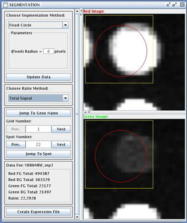
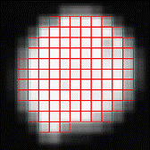
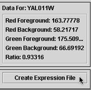
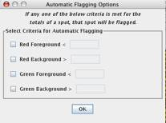
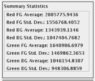
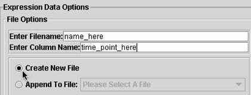

Segmentation (Control S)
Segmentation is the process of distinguishing signal from background. There are three methods available for this process. During segmentation, you will have the opportunity to view each feature on the entire microarray, one at a time. In this step, the two tiff files are separated again, with the red image on top and the green image on bottom. There are three algorithms available in MAGIC Tool for finding the foreground (signal) and background (noise) in each channel (red and green) separately. In addition, there are four choices for how to combine these four numerical values to determine the ratio.
You might want to experiment with the different algorithms and choices before settling on the best method. By browsing from spot to spot, or jumping to potential problem spots you noticed while gridding, you can see how these choices will affect the final answer. When you are satisfied with your choices, hit the "Create Expression File" button, and you will be prompted for a file in which MAGIC Tool will save all the ratios, one for each feature on the microarray. When you save the whole list, all values are recomputed, so it does not matter if you have browsed two spots or two hundred. In addition to saving the list of ratios, you will be given the opportunity to save "raw data," i.e. all foreground and background values in the red and green channels.
Fixed Circle
Fixed circle simply places a circle in the middle of the box. All pixels inside the circle (that are also inside the box) will be considered signal and pixels outside the circle (but still inside the box) will be background. You can set the radius of the circle in pixel units. In the above figure, you can see the features are in the box, but they are not centered. The foreground and background values of spots that are off center and spots that are bigger or smaller than the selected fixed radius will not be exactly right. However, the ratio between the red and green values should still be fairly accurate. Fixed circle is the most common method for segmentation, and is the fastest of the three segmentation methods.
Adaptive Circle
This method changes the center and radius of the circle to fit the size and location of each feature. The algorithm considers all pixels above a user-specified threshold to be "on," and finds the circle with the highest percentage of pixels that are on. The radius can range between a user-specified lower and upper bound; the center can be anywhere inside the grid box. This method is slower than Fixed Circle, but generally covers the actual spot better.
Seeded Region Growing
This method for segmentation is designed to find the signal for each spot based on the distribution of the signal. Seeded region growing looks for the brightest pixel and then connects all pixels adjacent to this pixel into one shape. The algorithm simultaneously connects pixels to background and foreground regions, continuing until all pixels are in one of the regions. A user-specified threshold determines which pixels can be used to "seed" the regions. This is the slowest method since each pixel is processed individually.
Regardless which method you choose, you can visually inspect the features to verify the gridding and segmentation were performed adequately. This inspection gives you a chance to flag any features you think should not be considered during subsequent data analysis.
Once you have chosen your segmentation method and ratio method, you can set criteria such that if any spot fails to meet the criteria, its ratio will not be included in the expression file. To do so, click on the "Automatic Flagging Options" button. Here, you can enter threshold values for the automatic flagging criteria. When you click OK (even if you leave all the thresholds blank), you will be prompted whether or not to do calculations to find the flagging status of the spots. In the process, MAGIC Tool also computes the average and standard deviation for each of the four data points used in calculations. You can then use this data to refine your automatic flagging criteria. For example, you might wish to flag genes whose total red foreground or total green foreground is less than two standard deviations below the mean.
To see on a grid what spots have been flagged, open the Spot Flagging window from the Addressing/Gridding submenu. All spots that have been automatically flagged will be marked with an orange "X." These flags can only be changed by adjusting the automatic flagging criteria, but you can add or remove manual flags at this stage as well. If a spot is both manually and automatically flagged, a blue "X" will be shown superimposed on the spot instead of the orange "X." If you unflag manually flagged spot that is also automatically flagged, the "X" will turn orange and the spot will remain flagged.
If you adjust the automatic flagging options, you must recalculate the data to have the revised automatic flags appear on the Spot Flagging display.
When you complete segmentation, you will produce an expression file. Click on "Create Expression File" when you are satisfied with the segmentation process. This will generate an expression file, which was the goal of the first half of MAGIC Tool. An expression file contains the ratios for each spot (red ÷ green). MAGIC will ignore certain entries in the gene name column ("blank", "EMPTY", "missing" and "none"; case insensitive), and will omit any flagged spots from the expression file entirely. This means that, in order to merge files properly, you may need to flag the same genes in all the expression files you wish to merge. The ratios will be used for all subsequent data analysis. You do not need the tiff files any more.
You will need to name the expression file and the column (e.g. time point, treatment, etc.).
You can append this to an existing file or create a new one. You can also save raw signal and background intensity levels.